핵심 요약
VGGT는 하나에서 수백 장의 이미지를 입력받아 camera parameter, point map, depth map, point track을 한 번의 feed-forward pass로 예측하는 3D foundation model이다.
VGGT의 핵심은 3D reconstruction을 task별 최적화 pipeline이 아니라 shared transformer backbone + multi-head prediction 문제로 재정의한다는 점이다.
All-in-one 3D Output
camera, depth, point map, point track을 하나의 network가 함께 예측.
Alternating Attention
frame-wise attention과 global attention을 번갈아 사용해 frame 내부 정규화와 multi-view 통합을 균형화.
Feed-forward Speed
최적화 후처리 없이도 여러 task에서 SOTA급 성능과 빠른 runtime 달성.
Backbone Transfer
pretrained feature를 novel view synthesis와 dynamic point tracking에 재사용 가능.
VGGT는 BA를 완전히 없앤다기보다, BA 없이도 바로 쓸 수 있는 초기 3D 예측을 강하게 만든다. 그래서 VGGT + BA가 더 좋아진다는 결과는 neural-first와 geometry refinement가 경쟁 관계만은 아니라는 점을 보여준다.
정확하지만 복잡함
matching, triangulation, BA 등 단계가 많고 post-processing 비용이 큼.
pairwise 중심
두 장 단위 예측이 강하지만 많은 view를 합치려면 alignment가 필요.
multi-view feed-forward
여러 view를 한 transformer context에서 처리하고 여러 3D quantity를 동시에 예측.
논문 상세 정리
아래부터는 기존 논문 내용을 최대한 담은 상세 해석이다. 핵심 흐름에서 벗어나는 배경지식, notation, 부가 자료는 접어두었다.
Problem: 3D reconstruction을 왜 feed-forward로 묶나
초록은 VGGT를 “하나의 feed-forward network로 3D scene의 핵심 속성을 직접 예측하는 모델”로 소개한다. 기존 3D 모델이 task-specific하게 나뉘어 있었던 것과 달리, VGGT는 camera, point map, depth, point track을 한꺼번에 다룬다.

“빠른 feed-forward”와 “여러 3D task 동시 처리”가 논문의 첫 번째 인상이다.
| 출력 | 의미 | 왜 중요한가 |
|---|---|---|
| Camera parameters | intrinsics + extrinsics | SfM류 pipeline의 핵심 결과를 직접 예측 |
| Point / depth maps | dense geometry | MVS/point cloud reconstruction으로 연결 |
| Point tracks | 2D correspondence across views | matching, TAP, downstream tracking에 활용 |
Context: SfM/MVS 후처리 의존을 왜 줄이나
Introduction의 질문은 분명하다. 3D reconstruction에서 여전히 중요한 visual geometry post-processing을 거의 제거하고, neural network가 여러 3D task를 직접 해결할 수 있는가? VGGT는 이 질문에 대해 large transformer와 대규모 3D annotation 학습으로 답한다.
VGGT는 classical geometry를 부정하기보다, post-processing 의존도를 크게 낮춘다.
| 기존 흐름 | 문제 | VGGT의 방향 |
|---|---|---|
| SfM / BA | 정확하지만 단계가 많고 느림 | feed-forward camera/point/depth 예측 |
| DUSt3R / MASt3R | pairwise 결과를 합치기 위한 alignment 필요 | hundreds of views를 한 context에서 처리 |
| Single-task 3D networks | depth, NVS 등 특정 task에 한정 | shared backbone으로 여러 3D quantity 동시 학습 |
Gap: camera/geometry/tracking output은 왜 따로 놀았나
Related Work는 VGGT의 위치를 세 가지 흐름으로 설명한다. SfM은 camera와 sparse geometry, MVS는 dense geometry, Tracking-Any-Point는 correspondence를 담당해 왔고, VGGT는 이 결과물들을 하나의 model output으로 묶는다.
Related Work 흐름 보기
논문을 읽을 때 각 문헌군을 “어떤 output을 담당했는가”로 보면 VGGT의 통합성이 잘 보인다.
camera parameter와 sparse point cloud를 추정. matching, triangulation, BA가 핵심.
known camera를 가정하고 dense scene geometry를 복원.
pairwise dense point cloud를 직접 예측하지만 multi-view fusion이 필요.
dynamic video에서 point correspondence와 occlusion을 추정.
Related Work에서 보존해야 할 메시지는 “각 연구 흐름의 output을 하나의 feed-forward model이 동시에 내는가”이다. 기존 흐름의 빈틈은 output이 camera, geometry, correspondence로 분리되어 있었다는 점이다.
| 기존 흐름 | 주요 output | VGGT에서의 재배치 |
|---|---|---|
| SfM | camera pose, intrinsics, sparse points | iterative matching/BA 대신 transformer output으로 직접 추정 |
| MVS | known camera 기반 dense depth/geometry | camera와 geometry를 별도 단계로 분리하지 않음 |
| DUSt3R / MASt3R | pairwise dense reconstruction | multi-view token aggregation으로 전역 일관성 강화 |
| TAP | point tracks와 visibility | static geometry output과 correspondence output을 함께 제공 |
Mechanism: transformer는 3D quantities를 어떻게 예측하나
Method는 입력 이미지 시퀀스 를 여러 3D annotation으로 매핑하는 transformer 함수로 정의된다. 출력은 camera , depth Di, point map Pi, tracking feature Ti다.
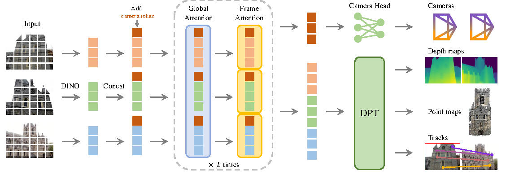
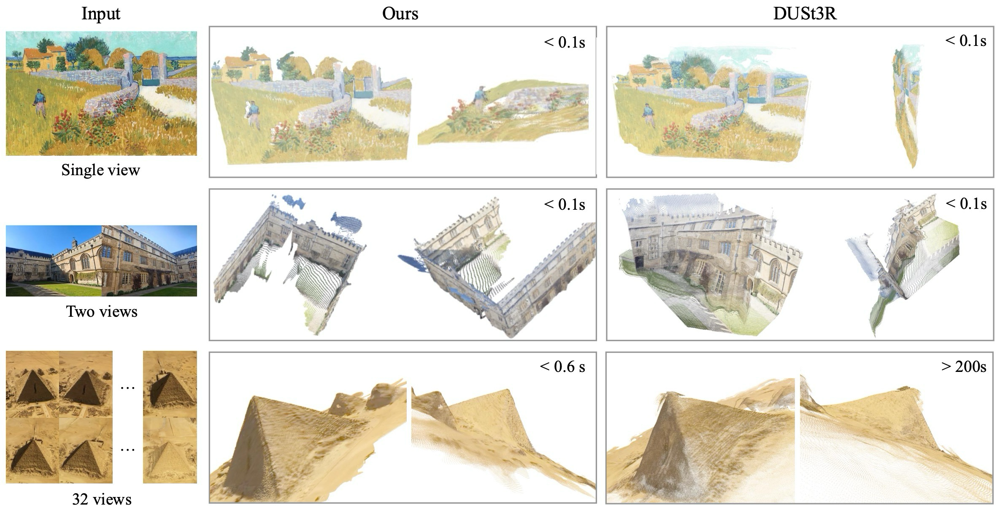
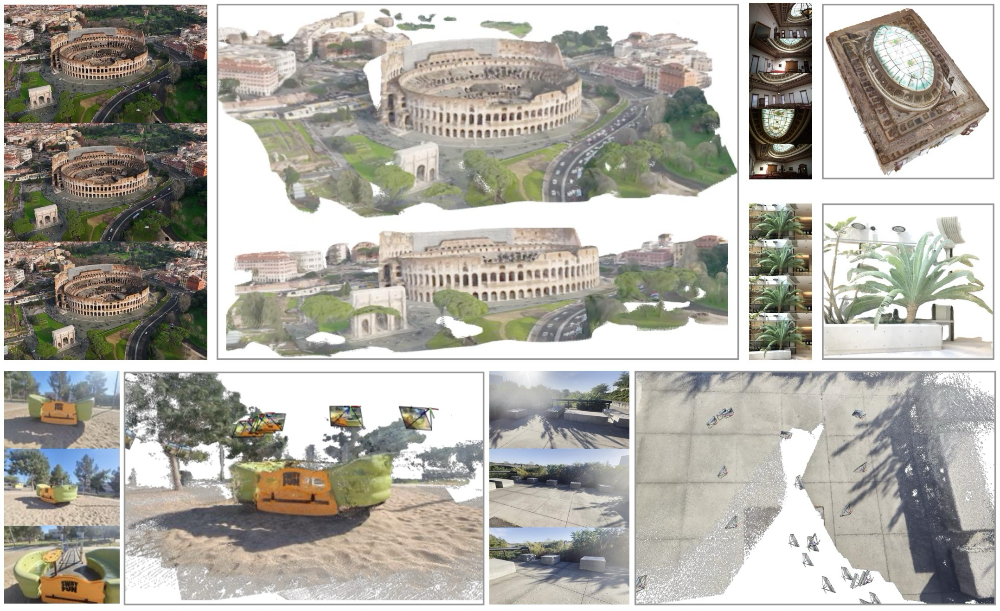
VGGT의 방법론은 3D inductive bias를 많이 넣기보다, transformer가 3D annotation에서 직접 학습하도록 두는 쪽에 가깝다.
| 구성 | 역할 | 읽는 포인트 |
|---|---|---|
| DINO patch tokens | 입력 이미지를 visual token으로 변환 | pretrained visual features로 안정적 학습 |
| Camera/register tokens | camera head와 reference-frame 구분에 사용 | 첫 frame을 world reference로 삼음 |
| Alternating Attention | frame-wise self-attention과 global self-attention 반복 | local frame context와 cross-view context를 모두 반영 |
| DPT heads | depth, point map, tracking feature 등 dense output 예측 | 여러 task가 같은 backbone feature를 공유 |
| Over-complete prediction | 서로 유도 가능한 quantity도 함께 supervise | multi-task supervision이 point-map accuracy를 높임 |
Training / Loss 세부 보기
학습은 camera, depth, point map, track loss를 합친 multi-task objective로 진행된다.
| Loss | 담당 출력 | 특징 |
|---|---|---|
| Camera | | quaternion, translation, field-of-view를 Huber loss로 supervise |
| Depth / point map | D, P | aleatoric uncertainty와 gradient term 포함 |
| Tracking | T | point correspondence와 visibility BCE 사용 |
| GT normalization | world scale / reference frame | 첫 camera frame 기준, 평균 3D distance로 scale 정규화 |
Evidence: pose/depth/tracking/NVS를 어떻게 검증했나
실험은 VGGT가 하나의 backbone으로 여러 3D task를 처리한다는 주장을 검증한다. Camera pose, depth/MVS, point map, image matching, ablation, downstream finetuning이 서로 다른 output head와 feature quality를 확인한다.
결과는 “feed-forward만으로 얼마나 강한가”와 “BA나 downstream finetuning을 붙이면 어디까지 좋아지는가”로 나눠 읽는다.
Re10K/CO3Dv2에서 feed-forward 0.2s로 강하고, VGGT+BA는 더 높은 정확도.
DTU에서 GT camera 없이 DUSt3R보다 크게 개선.
ETH3D에서 depth+camera로 만든 point가 dedicated point head보다 정확.
ScanNet-1500에서 matching 전용 모델이 아닌데도 AUC 우수.
AA backbone과 multi-task learning이 point map 성능에 중요.
NVS와 CoTracker backbone 교체로 transfer 가능성 확인.
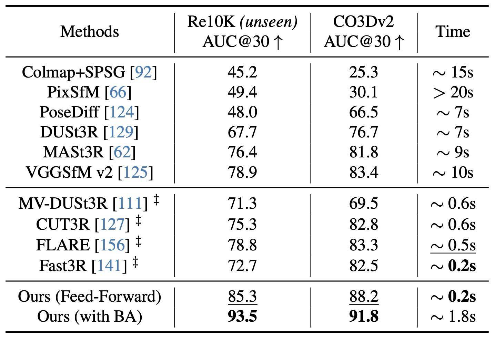
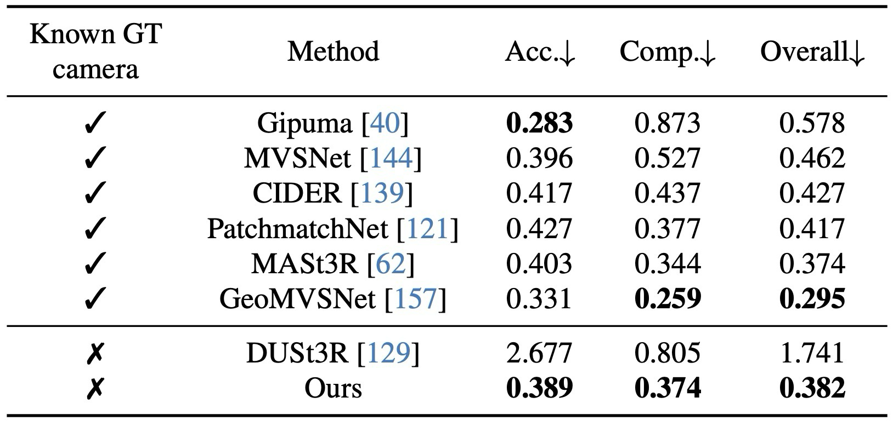
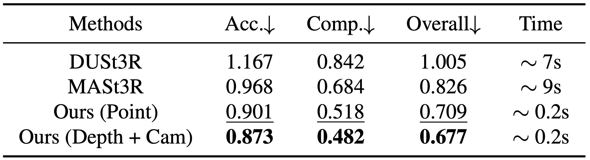
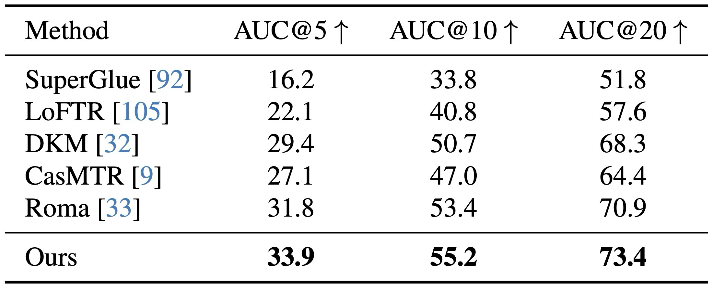
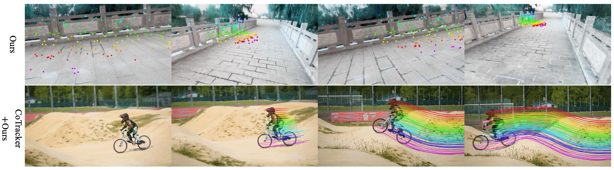
Ablation / NVS / runtime 세부 결과 보기
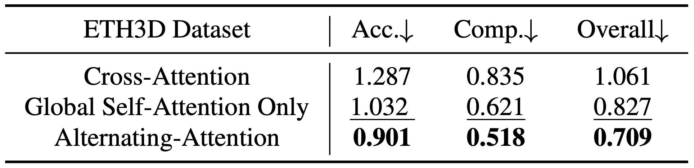
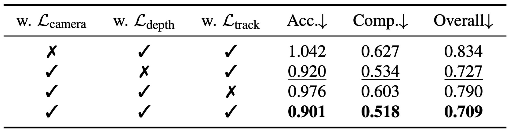
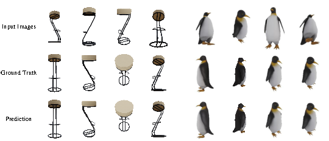
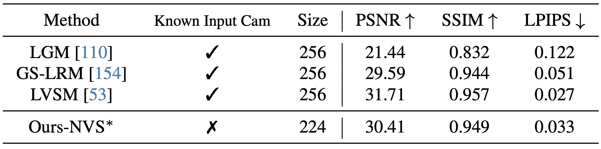
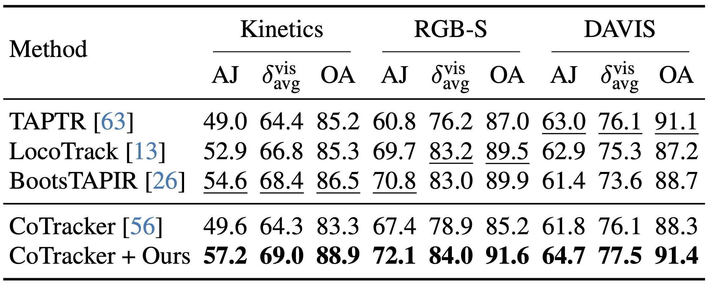
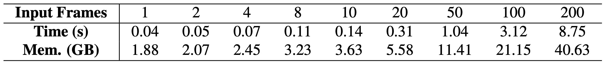
Usage / Limits: 어디까지 잘 되고 무엇이 남나
원문 discussion에서 명시한 한계는 fisheye / panoramic image, 극단적 input rotation, 큰 non-rigid deformation이다. 이런 영역은 targeted dataset fine-tuning으로 보강할 수 있고, 많은 view를 다룰 때는 memory-efficient attention과 multi-GPU parallelism이 중요하다. 또한 differentiable BA는 학습 비용 때문에 제외됐지만, explicit 3D annotation이 부족한 상황에서 supervision signal로 검토할 수 있는 방향으로 남는다.
Conclusion: feed-forward 3D foundation model의 의미는 무엇인가
VGGT의 결론은 대규모 transformer가 충분한 3D annotation으로 학습되면, camera parameter, multi-view depth, dense point cloud, 3D point tracking처럼 기존 geometry pipeline이 task별로 수행하던 핵심 출력을 feed-forward 방식으로 직접 예측할 수 있다는 것이다. 이 neural-first 접근은 optimization과 post-processing에 크게 기대는 전통적 방법보다 단순하고 빠른 3D scene estimation을 지향한다.
느낀점
(진행중...)
향후 계획
(진행중...)
Problem: why unify 3D reconstruction in feed-forward form?
VGGT is introduced as a feed-forward network that directly predicts the key 3D attributes of a scene. Unlike task-specific 3D models, it jointly handles cameras, point maps, depth maps, and point tracks.
The first impression of the paper is fast feed-forward inference across multiple 3D tasks.
| Output | Meaning | Why it matters |
|---|---|---|
| Camera parameters | Intrinsics and extrinsics. | Directly predicts a central output of SfM. |
| Point / depth maps | Dense geometry. | Connects to MVS and point-cloud reconstruction. |
| Point tracks | 2D correspondences across views. | Useful for matching, TAP, and downstream tracking. |
Context: why reduce dependence on SfM/MVS post-processing?
The introduction asks whether 3D tasks can now be solved directly by neural networks while avoiding most visual-geometry post-processing. VGGT answers this with a large transformer trained on large-scale 3D annotations.
VGGT does not reject classical geometry; it greatly reduces dependence on post-processing.
| Prior flow | Issue | VGGT direction |
|---|---|---|
| SfM / BA | Accurate but staged and slow. | Feed-forward camera, point, and depth prediction. |
| DUSt3R / MASt3R | Pairwise predictions require alignment. | Processes hundreds of views in one context. |
| Single-task 3D networks | Limited to a specific task. | Jointly learns multiple 3D quantities with one backbone. |
Gap: why were camera, geometry, and tracking outputs separated?
The related work situates VGGT across SfM, MVS, and Tracking-Any-Point. VGGT unifies outputs that these fields traditionally handled separately.
Related Work Details
Read each literature family by the output it traditionally provides.
Estimates cameras and sparse point clouds through matching, triangulation, and BA.
Reconstructs dense geometry, usually assuming known cameras.
Directly predicts pairwise dense point clouds but needs multi-view fusion.
Estimates point correspondences and occlusion in dynamic video.
The key related-work message is that VGGT predicts outputs that used to be produced by separate pipelines. The remaining gap in prior work is fragmentation across camera, geometry, and correspondence outputs.
| Prior line | Main output | How VGGT reframes it |
|---|---|---|
| SfM | Camera poses, intrinsics, and sparse points. | Predicts them directly instead of relying on iterative matching and BA. |
| MVS | Dense depth or geometry under known cameras. | Does not split camera estimation and geometry reconstruction into separate stages. |
| DUSt3R / MASt3R | Pairwise dense reconstruction. | Uses multi-view token aggregation for stronger global consistency. |
| TAP | Point tracks and visibility. | Provides correspondence-style outputs alongside static geometry. |
Mechanism: how the transformer predicts 3D quantities
The method defines VGGT as a transformer function that maps an image sequence to 3D annotations: camera , depth Di, point map Pi, and tracking features Ti.
VGGT relies less on handcrafted 3D inductive bias and more on learning from large-scale 3D annotations.
| Component | Role | Reading point |
|---|---|---|
| DINO patch tokens | Convert images into visual tokens. | Stable pretrained visual features. |
| Camera/register tokens | Support camera prediction and reference-frame distinction. | The first frame is the world reference. |
| Alternating Attention | Repeats frame-wise and global self-attention. | Combines per-frame context with cross-view context. |
| DPT heads | Predict dense outputs such as depth, points, and tracking features. | Several tasks share one backbone feature. |
| Over-complete prediction | Supervises quantities that are partly derivable from each other. | Multi-task supervision improves point-map accuracy. |
Training / Loss Details
The model uses a multi-task objective over camera, depth, point map, and track losses.
| Loss | Output | Note |
|---|---|---|
| Camera | | Supervises quaternion, translation, and field of view. |
| Depth / point map | D, P | Includes aleatoric uncertainty and gradient terms. |
| Tracking | T | Uses point correspondence and visibility BCE. |
| GT normalization | World scale and reference frame. | Uses first camera frame and average 3D distance. |
Evidence: how pose, depth, tracking, and NVS are tested
The experiments test whether one backbone can handle many 3D tasks. Camera pose, depth/MVS, point maps, image matching, ablations, and downstream finetuning each validate a different output or feature property.
Read the results as two questions: how strong is feed-forward VGGT alone, and how much further does BA or downstream finetuning improve it?
Strong at 0.2s feed-forward; VGGT+BA improves further.
Greatly improves over DUSt3R on DTU without GT cameras.
Depth+camera-derived points outperform the dedicated point head.
Strong ScanNet-1500 AUC despite not being a matching-specialized model.
Alternating Attention and multi-task learning are important.
NVS and CoTracker finetuning show transferability.
View ablation / NVS / runtime details
Usage / Limits: what works well and what remains
The discussion names fisheye or panoramic images, extreme input rotations, and large non-rigid deformation as remaining limitations. Targeted dataset fine-tuning can address these domains, while memory-efficient attention and multi-GPU parallelism matter for scaling to many views. Differentiable BA was excluded because of training cost, but remains a possible supervision signal when explicit 3D annotation is scarce.
Conclusion: what feed-forward 3D foundation models imply
VGGT concludes that a large transformer trained with sufficient 3D annotations can directly predict key 3D scene properties such as camera parameters, multi-view depth, dense point clouds, and 3D point tracks. Its neural-first approach aims for simpler and faster 3D scene estimation than pipelines that rely heavily on optimization and post-processing.
Takeaway
(In progress...)
Future Work
(In progress...)
Comments